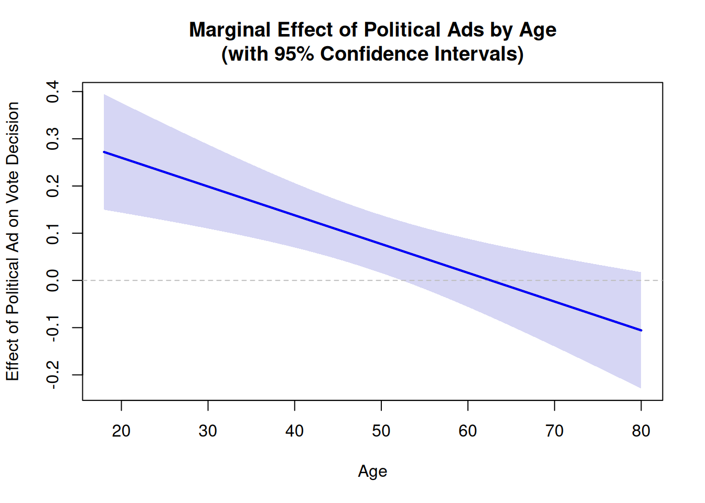
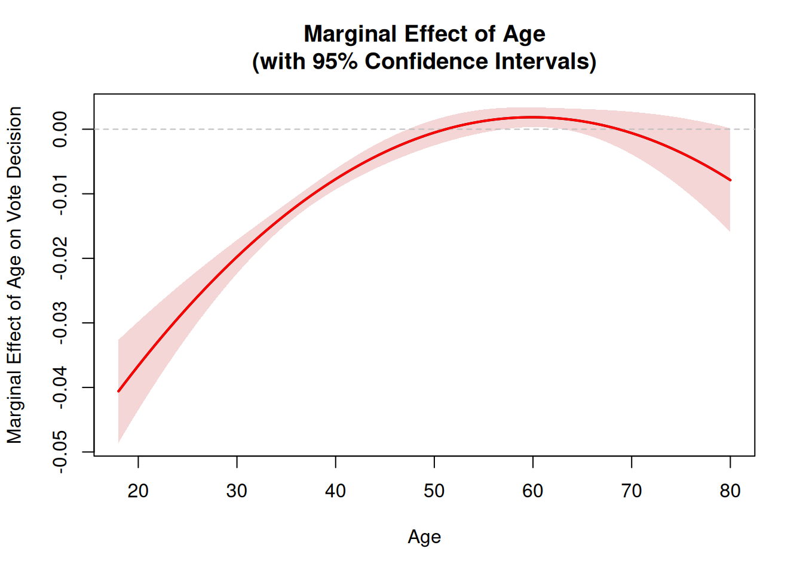

Research, data analysts, and their stakeholders often want to know if an intervention works in different contexts. An example is a political campaign manager might want to know if a particular message resonates differently with different demographic groups or geographic regions. Depending on the answer, financial resources might be allocated differently. For instance, the manager might decide to run online ads instead of mailers to reach younger voters. Alternatively, he might target low-turnout neighborhoods to mobilize voters in competitive districts. However, to make an informed decision, the manager needs to understand what the data says about the interaction of political ads and certain contexts. This is where interaction terms come in.
5.2 What is an Interaction Term?
We established in the previous chapter that a coefficient in a regression model represents the average effect of a predictor variable on the response variable, holding all other variables constant. However, this assumes that the effect of the predictor is the same across all contexts. Using a linear probability model with a binary response variable voteDecision and a binary predictor variable politicalAd, we can illustrate this point. Mathematically, our model without an interaction term looks as follows:
As we know from the previous chapters, the effect size of a predictor variable in a linear regression model is represented by the coefficient \(\beta_1\). To understand interactions, it is helpful to know that the effect size of a predictor can simply read off the equation because it is the partial derivative of the response variable with respect to the predictor variable. In our simple regression model, the effect size of politicalAd is \(\beta_1\), which means that for every one-unit increase in politicalAd, the expected change in voteDecision is \(\beta_1\) units, holding all other variables constant. Mathematically, the partial derivative of Equation 5.1 can be expressed as: \[
\frac{\partial voteDecision_i}{\partial politicalAd_i} = \beta_1
\tag{5.2}\]
In R, this model can be estimated using the lm() function as follows (using some simulated data):
summary(lm(voteDecision ~ politicalAd, data = data) )
Call:
lm(formula = voteDecision ~ politicalAd, data = data)
Residuals:
Min 1Q Median 3Q Max
-0.4889 -0.4889 -0.4056 0.5111 0.5944
Coefficients:
Estimate Std. Error t value Pr(>|t|)
(Intercept) 0.40557 0.02211 18.341 < 2e-16 ***
politicalAd 0.08337 0.03137 2.658 0.00799 **
---
Signif. codes: 0 '***' 0.001 '**' 0.01 '*' 0.05 '.' 0.1 ' ' 1
Residual standard error: 0.4959 on 998 degrees of freedom
Multiple R-squared: 0.007029, Adjusted R-squared: 0.006034
F-statistic: 7.064 on 1 and 998 DF, p-value: 0.007989
So, why is this important to understand interaction terms? An interaction term is essentially a multiplicative combination of two predictor variables. When we include an interaction term in our regression model, we simply add two predictors and their product to the equation. Let’s assume that we want to know whether the effect of politicalAd on voteDecision is dependent on the age of a respondent. Our regression model with the interaction term would look like this: \[
voteDecision_i = \alpha + \beta_1 politicalAd_i + \beta_2 age_i + \beta_3 (politicalAd_i \times age_i) + \epsilon_i
\tag{5.3}\]
If we take the partial derivative of Equation 5.3 with respect to politicalAd, we get: \[
\frac{\partial voteDecision_i}{\partial politicalAd_i} = \beta_1 + \beta_3 age_i
\tag{5.4}\]
As Equation 5.4 shows, the effect of politicalAd on voteDecision is not constant but depends on the value of age. The coefficient \(\beta_3\) represents the change in the effect of politicalAd for each one-unit increase in age. If \(\beta_3\) is positive, it means that the effect of politicalAd on voteDecision increases as age increases. Conversely, if \(\beta_3\) is negative, it means that the effect of politicalAd on voteDecision decreases as age increases.
In R, this would look like this:
summary( lm(voteDecision ~ politicalAd * age, data = data))
Call:
lm(formula = voteDecision ~ politicalAd * age, data = data)
Residuals:
Min 1Q Median 3Q Max
-0.5618 -0.4550 -0.3224 0.5214 0.7091
Coefficients:
Estimate Std. Error t value Pr(>|t|)
(Intercept) 0.223920 0.064736 3.459 0.000565 ***
politicalAd 0.381655 0.091075 4.191 3.03e-05 ***
age 0.003673 0.001231 2.983 0.002920 **
politicalAd:age -0.006093 0.001753 -3.477 0.000530 ***
---
Signif. codes: 0 '***' 0.001 '**' 0.01 '*' 0.05 '.' 0.1 ' ' 1
Residual standard error: 0.4933 on 996 degrees of freedom
Multiple R-squared: 0.0195, Adjusted R-squared: 0.01654
F-statistic: 6.602 on 3 and 996 DF, p-value: 0.0002034
(R adds the interaction term automatically when you use the * operator between two variables in the formula.)
Even thought it is more informative to plot the interaction to understand how the effect of politicalAd changes across different ages, we can also look at the coefficients to get a sense of the interaction. We can see that the coefficient for politicalAd is positive. However, the coefficient politicalAd gives us only the effect of politicalAd when age is zero, which is not a meaningful value in this context. The coefficient for the interaction term politicalAd:age is negative, which indicates that the effect of politicalAd on voteDecision decreases as age increases. This means that the political ad is more effective for younger voters than for older voters. Just looking at the table gives us already a pretty good idea of the interaction, but it is often more intuitive to visualize it:
# Fit the model with interactionmodel <-lm(voteDecision ~ politicalAd * age, data = data)# Extract coefficients and variance-covariance matrixcoefs <-coef(model)vcov_matrix <-vcov(model)# Create a sequence for the moderator variable (age)age_seq <-seq(18, 80, length.out =100)effect <- coefs[2] + coefs[4] * age_seqse <-sqrt(vcov_matrix[2, 2] + age_seq^2* vcov_matrix[4, 4] +2* age_seq * vcov_matrix[2, 4])ci_lower <- effect -1.96* seci_upper <- effect +1.96* se# Create plotplot(age_seq, effect, type ="l", lwd =2,ylim =c(min(ci_lower), max(ci_upper)),xlab ="Age",ylab ="Effect of Political Ad on Vote Decision",main ="Marginal Effect of Political Ads by Age\n(with 95% Confidence Intervals)")# Add confidence interval as shaded regionpolygon(c(age_seq, rev(age_seq)), c(ci_upper, rev(ci_lower)),col =rgb(0.2, 0.2, 0.8, 0.2),border =NA)# Add reference line at y=0abline(h =0, lty =2, col ="gray", lwd =1)# Re-plot the line on toplines(age_seq, effect, lwd =2, col ="blue")

Using the model with the interaction term and the delta method, we can plot the marginal effect of politicalAd on voteDecision across different ages, along with 95% confidence intervals. The plot shows that the change in percentage points of the political ad is positive for younger voters but decreases as age increases, eventually becoming no longer distinguishable from zero for voters older than 50. This visualization gives us a much clearer picture of how the effect of the political ad changes across different ages compared to a regression table.
5.3 A Brief Digression: Polynomial Regression
Since we have already introduced the concept of interaction terms, it is worth mentioning that polynomial regression is a special case of interaction terms. Even though the link function between the predictor and the response variable is linear in polynomial regression, the relationship between the predictor and the response variable can be non-linear. To model non-linear relationships, we use interaction terms as well. In contrast to our previous example, however, we do not interact two different predictor variables but rather a predictor variable with itself. This allows us to capture non-linear relationships between the predictor and the response variable. Using age as an example, our regression model with a cubic term would look like this: \[
voteDecision_i = \alpha + \beta_1 age_i + \beta_2 age_i^2 + \beta_3 age_i^3 + \epsilon_i
\tag{5.5}\]
The partial derivative of Equation 5.5 with respect to age is: \[
\frac{\partial voteDecision_i}{\partial age_i} = \beta_1 + 2 \beta_2 age_i + 3 \beta_3 age_i^2
\tag{5.6}\]
In R, a polynomial regression can be estimated using the poly() function as follows:
summary(lm(voteDecision ~poly(age, degree =3), data = data2) )
Call:
lm(formula = voteDecision ~ poly(age, degree = 3), data = data2)
Residuals:
Min 1Q Median 3Q Max
-0.49942 -0.04568 -0.00698 0.00680 0.98670
Coefficients:
Estimate Std. Error t value Pr(>|t|)
(Intercept) 0.07600 0.00729 10.425 < 2e-16 ***
poly(age, degree = 3)1 -3.20179 0.23053 -13.889 < 2e-16 ***
poly(age, degree = 3)2 2.39403 0.23053 10.385 < 2e-16 ***
poly(age, degree = 3)3 -1.14468 0.23053 -4.965 8.06e-07 ***
---
Signif. codes: 0 '***' 0.001 '**' 0.01 '*' 0.05 '.' 0.1 ' ' 1
Residual standard error: 0.2305 on 996 degrees of freedom
Multiple R-squared: 0.2463, Adjusted R-squared: 0.244
F-statistic: 108.5 on 3 and 996 DF, p-value: < 2.2e-16
And the plot of the marginal effect of age on voteDecision would look like this:
# Fit the polynomial regression model with raw polynomialsmodel_poly <-lm(voteDecision ~ age +I(age^2) +I(age^3), data = data2) # Extract coefficients and variance-covariance matrixcoefs <-coef(model_poly)vcov_matrix <-vcov(model_poly)# Create age sequence for predictionage_seq <-seq(18, 80, length.out =100)# Calculate marginal effect: β₁ + 2*β₂*age + 3*β₃*age²# coefs[2] = β₁ (age)# coefs[3] = β₂ (age²)# coefs[4] = β₃ (age³)effect <- coefs[2] +2* coefs[3] * age_seq +3* coefs[4] * age_seq^2# Delta method for standard error:# For f(β) = β₁ + 2*β₂*age + 3*β₃*age², gradient is [1, 2*age, 3*age²]# SE = sqrt(gradient' * Vcov * gradient)se <-sqrt(vcov_matrix[2, 2] +4* age_seq^2* vcov_matrix[3, 3] +9* age_seq^4* vcov_matrix[4, 4] +4* age_seq * vcov_matrix[2, 3] +6* age_seq^2* vcov_matrix[2, 4] +12* age_seq^3* vcov_matrix[3, 4])# Calculate 95% confidence intervalsci_lower <- effect -1.96* seci_upper <- effect +1.96* se# Create plotplot(age_seq, effect, type ="l", lwd =2,ylim =c(min(ci_lower), max(ci_upper)),xlab ="Age",ylab ="Marginal Effect of Age on Vote Decision",main ="Marginal Effect of Age\n(with 95% Confidence Intervals)")# Add confidence interval as shaded regionpolygon(c(age_seq, rev(age_seq)), c(ci_upper, rev(ci_lower)),col =rgb(0.8, 0.2, 0.2, 0.2),border =NA)# Add reference line at y=0abline(h =0, lty =2, col ="gray", lwd =1)# Re-plot the line on toplines(age_seq, effect, lwd =2, col ="red")

The plot shows that the marginal effect of age on voteDecision is negative for younger voters but diminishes over time and becomes largely insignificant for voters in the mid-40s and older.
Of course, other functional forms could be considered to capture different types of non-linear relationships. But the main point is that this example illustrates how polynomial regression can capture non-linear relationships between a predictor variable and a response variable.